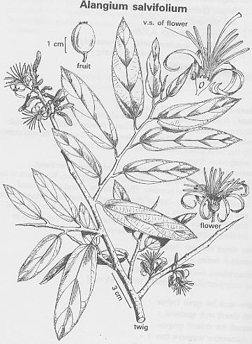

Alangium
salvifolium (Linn. f.) Wang.
----- Taxonomic Details

----- Correct Name
----- Classification
----- Synonyms
----- Common Names
Other
Biological Details
----- Habit and
Habitat
----- Diagnostic
Features
----- Reproductive
Biology
---------- Breeding
System
---------- Phenology
---------- Pollinators
----------
Seed Biology
---------- Seed Gerimination
------ Cultivation
----- Major
Pests and Diseases
Economic
Potential and Uses
----- Parts Used
-----
Uses
----- Harvesting
Practices
----- Produce
and Products
----- Chemistry
----- Processing
Techniques
----- Other uses
----- Economic
Potential to the Country
----- Export
Potential
Miscellaneous
Information
Literature
Taxonomic
Details
Correct Name
: Alangium
salvifolium (Linn. f.) Wang.
Family : Alangiaceae
Synonyms : A.
lamarckii Thw.; Alangium decapetalum;,Alangium
lamarckii,; Alangium lamarckii var glandulosum,; Alangium salvifolium; Alangium
tomentosum; Grewia salvifolia;
Common Names :
English: Ankle
Sanskrit: Ankola
Hindi: Akola,
Akol, Angol, Dhela, Dhera
Bengali: Akar
kanta
Malayalam: Irinjil.
Alinni, Ankodah, Ankola, Ankolam, Ansaroli, Arinjil,
Arinjl,
Velittondi
Tamil: Alangi,
Alandi
Telugu: Anko.
lamu, Ankolam, Ankolamu, Sage leaved Alangium,Sage-leaved alangium,Udugu,
Udugucettu, Urgu
Kannada: Ankole,
Ankli, Ankodah,Ankola, Ankolamara, Ankole, Oodga
Back to Top
Other
Biological Details
HABIT & HABITAT
A small deciduous tree, shrub or straggler, found in the drier parts of India
and Ceylon and growing vigorously
in the forests of south India and Burma.
It is also found along streams, Coastal areas, dry deciduous forest,
Dry regions, Dry tropical forest, evergreen forest, Forests, Hill slopes, hills,
Low elevation,
BioticZone: Konkan plain,none,tropics,
Availability :
Misc: Anand Sagar, Baggalmadgu, Budbhum, Chelama, Circars, Corbett National
Park, Darah, Deccan, Devarayanadurga, Dhamtari, Elephanta island, Gangapur Reserve
Forest, Gariaband, Hiwri R.F., Kakkupe Reserve Forest, Kalingra, Kalinjra,
Kharbi range, Mount Abu, nanacha dongar, Narasimhadevarabetta, Ponmudi,
Ranganthittu, Rangapur
Reserve Forest, Sanapur on Gangavati Road., Satari, Sira-Madhurgiri Road,
Tumraxpalli, Udayathan estate, Valpoi area, Yadgir Reserve Forest,
Country: Africa, Burma, China, East Africa, India, Indomalaysia, Malaya,
Malayasia, Philippine Islands, Sri Lanka,
Zone: Central, South and West,
State: Andhra Pradesh, Bihar, Goa Daman Diu, Karnataka, Kerala, Madhya Pradesh,
Maharashtra, Rajasthan, Tamil Nadu,
District: Bangalore, Banswara, Bastar, Belgaum, Bellary, Bijapur, Bilaspur, Bombay,
Carnatic, Champaran, Chandrapur, Chikmaglore, Dakshin Kannada, Damoh, Dharmapuri,
Dharwad, Durg, Gulbarga, Kolar, Kota, Kurnool, Mandla, Mandya, Medak, Mysore,
none, Raichur, Raigad, Raigarh, Raipur, Salem, Shimoga, Sirohi, South Arcot,
Tiruchi, Tirunelveli, Tumkur, Uttar Kannada and Yawatmal,
Taluk: Abu road, BADAMI, tenkasi
Status :
Back to Top
DIAGNOSTIC FEATURES
The
wood is olive-brown, hard and close-grained and weighs 42-56 Ib. per c. ft.
(Gamble, 389). Younger
branches, leaf-stalks, flower stalks, calyx-tubes and the outside of petals
coated with soft wolly hairs. Leaves narrowly oblong, pointed or blunt at apex,
3-nerved, glabrous above, softly hairy in the leaves below. Flowers clustered in the axils of leaves. Calyx-limb-
5-10 toothed. Petals 5-10, stamens 20-30, style cylindrical. stigma large, round.
Berry ovoid.
Back to Top
REPRODUCTIVE BIOLOGY
Flowers
clustered in the axils of leaves. Calyx-limb- 5-10 toothed. Petals 5-10,
stamens 20-30, style cylindrical. stigma large, round. Berry ovoid.
Breeding System
:
Phenology :
Flowering occurs in Jan-March. March-July and also
during February-June.
Pollinators:
Seed Biology :
Seedling Germination :
Cultivation:
Back to Top
MAJOR PESTS & DISEASES
Pests:
Diseases:
Back to Top
Economic
Potential and Uses
Parts used
:
Fruit, Root bark,
Wood
Uses:
-
The
fruit is edible.
-
Wood as small timber
-
Root bark as
medicine.
Harvesting Practices
Produce and Products
Back
to Top
Chemistry:
The
seeds contain alkaloids (0-2%), and a sterol of
m.p., 302-307°, but very little
fatty oil. The root bark also contain an amorphous alkaloid alangine(0.8%; m.p.,
80-82 degree)
Back
to Top
Processing Techniques:
Back
to Top
Other Uses :
-
In
south India, wood is used for pestles, oil-mills, cattle-bells, etc.
It is suitable for inlaying and carving.
The wood is also used as fuel. The barkis used in jaundice. Powdered
root bark with blackpepper is used in piles.
-
The
root bark is anthelmintic and purgative;
-
It
is useful in fevers and skin diseases, and-is generally administered in
the form of powder.
-
An amorphous alkaloid alangine (0-8% ; m.p., 80-82°) from the
bark. In small doses,
the alkaloid lowers blood pressure temporarily, depresses the heart and
produces irregular respiration. It also increases peristaltic movement of
the intestines.
Back
to Top
Economical
Potential to the country
Back
to Top
Export Potential
Back
to Top
Miscellaneous Information
Back
to Top
Literature
- Flora of Nallamalais,vol 1,J.L.ELLIS,1987,Library,Atree,Bangalore.
- Flora of Rajasthan,vol 1,B.V. Shetty & V.
- Sasya
Sahyadri- A CD on Plants of Western Ghats, 2003, K.N. Ganeshaiah.
- Singh,1987,ATREE,Bangalore.Mayuranathan,P.V.(1929). The Flowering Plants of Madras City And Its
Neighborhood. The superintendent, Government Press, Madras. P: 141.
- Singh, N. K. and Singh, D. P., 2001, Ethnobotanical
Survey Of District Balrampur, Flora And Fauna, Vol.7. No.2 pp.59-66
Back to Top